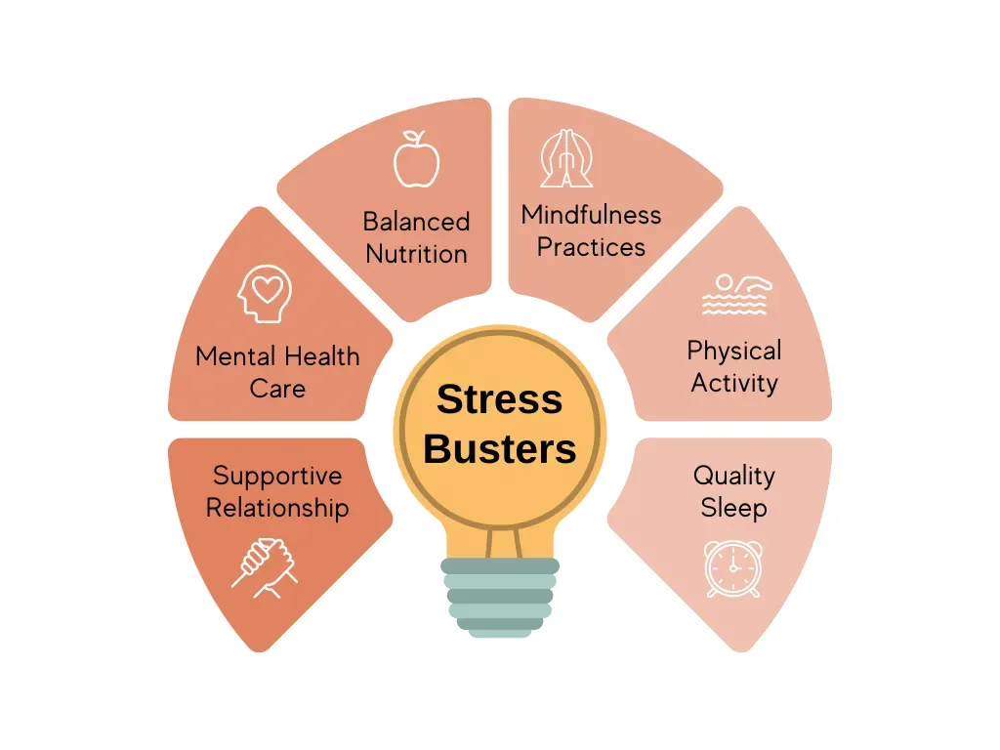

Stress Management
Psychiatrist for Stress Management
What is Stress
Stress can be defined as the body’s physiological and psychological response to situations that are perceived as threatening, demanding, or overwhelming. This response is deeply rooted in our evolutionary history, where it served as a survival mechanism, often referred to as the “fight or flight” response. In modern times, stress can be triggered by a variety of situations, both positive and negative, such as work pressures, relationship issues, financial worries, or even exciting life events.
When faced with a stressful situation, the body releases stress hormones, including cortisol and adrenaline. These hormones prepare the body to take action by increasing heart rate, redirecting blood flow to vital organs, and heightening alertness. While this response is beneficial in short bursts, chronic or excessive stress can lead to detrimental effects on physical and mental health.
We are living in a modern world where stress is taking a toll of our lives, even day to day living is becoming stressful .we cannot control these situation but we can modify our reaction, emotions ,behavior, thoughts to adapt to these stressor so we don’t get bogged down.
First but not the least is to identify your stressors.
Stress management starts with identifying the sources of stress in your life. Our stressors are difficult to identify because we overlook our habits, behavior or thoughts

Start by writing what bothers you; maintain a diary where you jot down:
- Cause of stress
- How you felt?
- How did you react?
- What made you feel better?
Maintain this stress journal regularly so you can see which situations are precipitating stress and how you can unlearn your action and modify your reaction.
Most people adhere to non healthy techniques to handle stress like
- Smoking and drinking
- Overeating or under eating
- Sleeping too much
- Procrastinating
- Withdrawing from friends and family
- Loosing control, getting angry
- Getting into addiction
- Becoming violent
How Stress Affects Physical and Mental Health
Stress has profound effects on both our physical and mental well-being. Chronic stress contributes to various mental and physical health issues.
- Insomnia or hypersomnia
- Feeling more or less hungry than usual
- Self-soothing with drugs or alcohol
- Changes in mood or mental health
- Less productivity and enjoyment at work
- Migraine headaches
- Chronic pain
- Anger issues
- Depression
- Anxiety
- Loss of enjoyment in social activities
- Heart attack and stroke
Managing and Coping with Stress:
There are many healthy ways to handle stress but they all require change. You can either change the situation or change your reaction. Stress management is not one size fit for all. Each person’s reaction to stress is unique so management is also different.
As we know stress is because of either situation or our reaction so to break the cycle we can.
- Avoid the stressor
- Alter our stressor
- Adapt to our stressor
- Accept our stressor
Some healthy ways of dealing with stress are
- Relaxation time is a must.
- Socialize.
- Do something you enjoy every day.
- Exercise regularly.
- Eat a healthy diet.
- Reduce caffeine and sugar.
- Avoid alcohol, cigarettes, and drugs.
- Get enough sleep.
If despite of your continuous efforts all these strategies fail, consult a psychiatrist in delhi who can prescribe medication and behavior therapy to cope with stress.